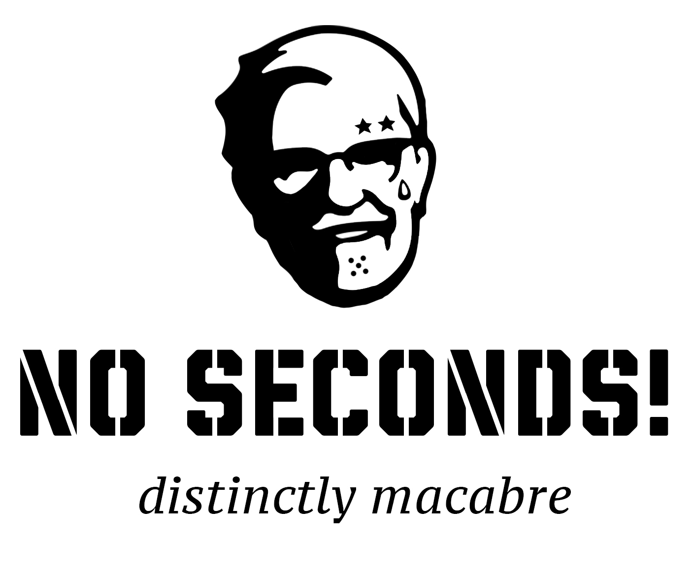
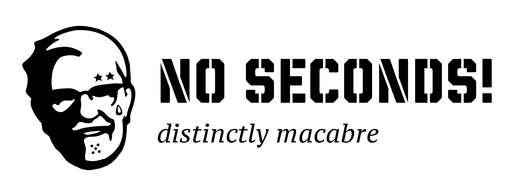
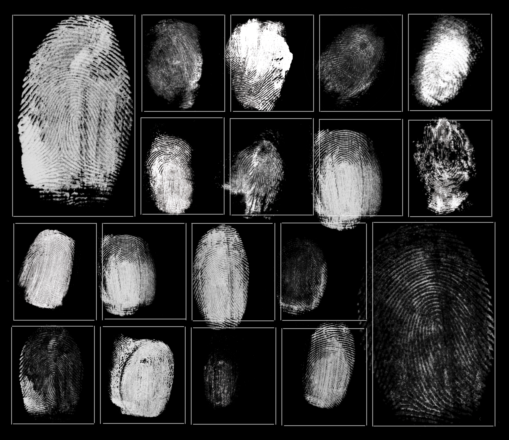
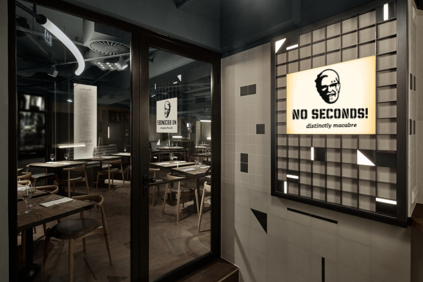
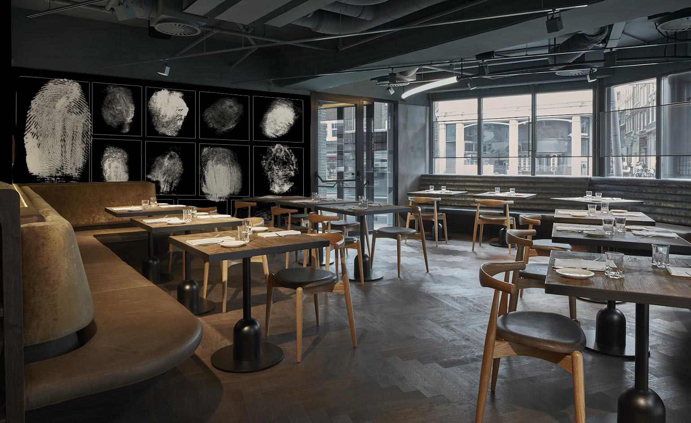

No Seconds is a conceptual pop-up restaurant that is a critique of the death penalty.
The restaurant's menu allows visitors to not only taste last meal requests but to gain an brief insight of those who were killed on death row.
The logo is a play off of Colonel Sanders from Kentucky Fried Chicken. By appropriating the KFC logo, No Seconds becomes a satire of the death penalty.




